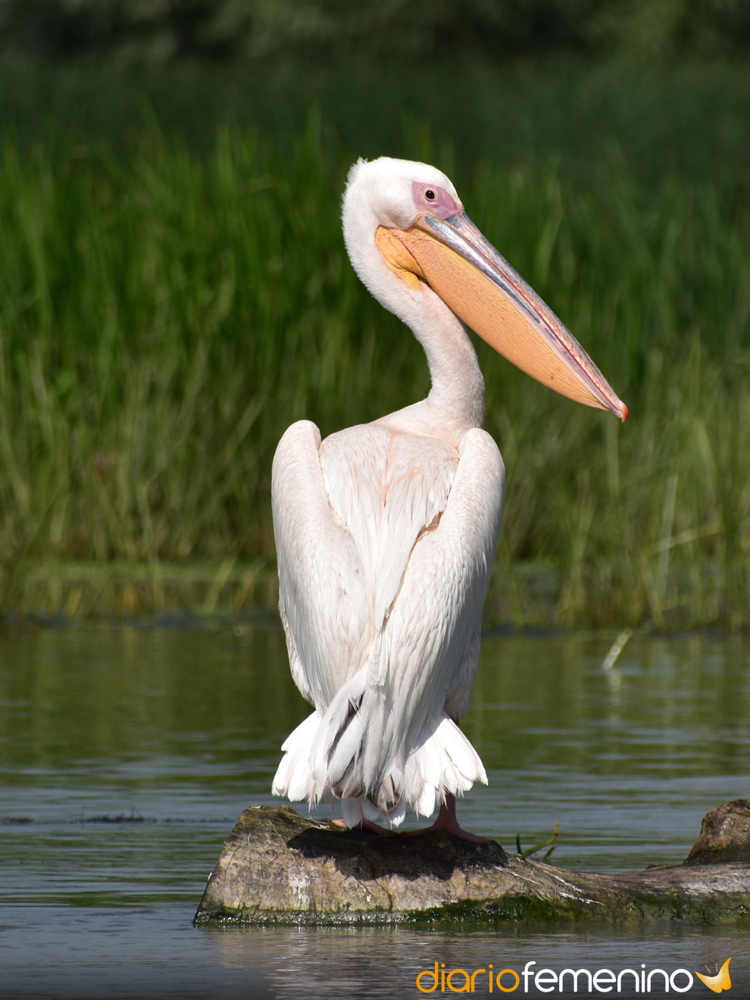

pelicano
Pelecanus

Frecuentan las aguas interiores y costeras donde se alimentan principalmente de peces, capturándolos en o cerca de la superficie del agua. Son aves gregarias, viajan en bandadas, cazan cooperativamente y se reproducen en colonias.
llegan a tener una envergadura de más de 3 metros
Poseen picos largos caracterizados en forma de gancho curvado hacia abajo situado en el extremo de la mandíbula superior y por la fijación de una enorme bolsa gular en la parte inferior del pico.
El cuello es largo y las patas son cortas pero robustas con grandes pies completamente palmeados
son bastante livianas debido a las bolsas de aire que se encuentran en su esqueleto y entre la piel, que les permite flotar encima del agua.
La cola es corta y cuadrada.
PAGINA PRINCIPAL